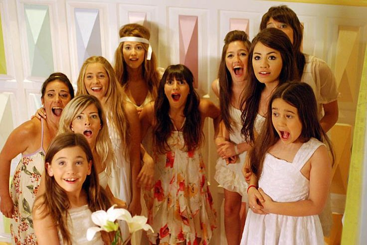
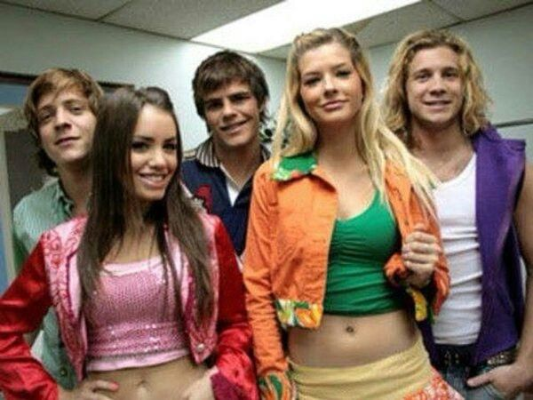
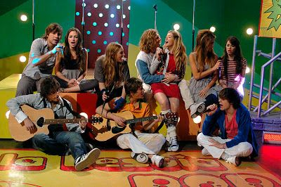

Temporada 2





La segunda temporada de Casi Ángeles se emitió en 2008 y se tituló “El hombre de las mil caras”. Los chicos comienzan una nueva etapa en el Hogar Mágico, ya liberados del control de Bartolomé Bedoya Agüero.
Al comienzo de la temporada, Cielo se encuentra desaparecida después de haber sido absorbida por el reloj de la mansión. Cuando regresa, lo hace sin memoria, mientras Nicolás intenta sostener el Hogar Mágico y cuidar a los chicos.
La principal amenaza es la Corporación Cruz, liderada por Juan Cruz, quien busca acceder a Eudamón y utiliza a Franka Mayerhold y otros integrantes de la organización para atacar emocionalmente a quienes viven en la mansión.
También llegan nuevos personajes al hogar, entre ellos Simón, Melody, Valeria, Caridad y Luca. Sus historias generan nuevas relaciones, conflictos y romances entre los jóvenes.
Teen Angels continúa teniendo un papel central y la música acompaña el crecimiento de los protagonistas, mientras los misterios de Eudamón y el Libro de los Guardianes adquieren cada vez mayor importancia.